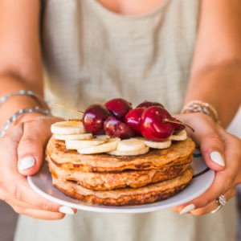

Pancakes légers « super healthy »

Hello les gourmands ♥!! Après un week-end bien gourmands je viens partager avec vous cette recette de pancakes healthy à consommer sans modération!!
Entre picnic, baignade, pancakes, boulot, sieste et victoire ce fut un week-end gourmand, riche en émotions et en jolies découvertes.
L’une de vous m’a récemment contacté pour que je lui donne une recette de pancakes à base de flocons d’avoine (je l’avais publié en story il a quelques temps mais pas ici). Dimanche oblige, les pancakes étaient donc forcément de la partie et j’en profite alors pour publier cette délicieuse recette 😉 Ces pancakes sont moelleux, légers et super healthy comme aime le dire mon chéri (si je ne me trompe pas ils sont même végan car ne contiennent ni œufs, ni lait, ni beurre).
Habituellement, je vous dis que vous pouvez remixer cette recette comme bon vous semble mais pour celle-ci il est important de respecter le mélange des deux farines pour obtenir une belle pâte et des pancakes bien fluffy. Ici, j’ai donc utilisé de la farine d’épeautre (riche en magnésium) que vous pouvez remplacer dans les mêmes quantités par de la farine de blé et des flocons d’avoine (en mixant tout simplement des flocons d’avoine jusqu’à obtenir une poudre). La farine de flocons d’avoine permet ici de donner de la texture aux pancakes, si vous l’enlevez je ne garantis pas le résultat (vous aurez davantage une bouillie qu’une belle pâte à pancakes) et idem si vous n’utilisez que de la farine de flocons d’avoine (les pancakes risquent de ne pas avoir de tenue à la cuisson).
Après cette petite parenthèse sur les farines, je vous laisse avec cette délicieuse recette que je vous invite à tester fortement (c’est devenue notre recette favorite avec celle des pancakes qui tuent^^)!
Ingrédients
- Farine d'epeautre - 80g
- Farine de flocons d'avoine - 60g
- Levure chimique - 1 càc rase
- Bicarbonate - 1 pincée
- Vanille en poudre - 1 petite cuillère à café
- Lait végétale (de riz pour moi) - 160g
- Compote de pommes sans sucre ajouté - 160g
- Jus de citron - 1,5 càs
- Sucre muscovado ou sucre de coco - FACULTATIF : 1 à 2 càc
Instructions
- Mixez les flocons d'avoine jusqu'à obtenir une poudre
- Mélangez tous les ingrédients secs ensemble (farine, levure, bicarbonate, vanille en poudre) et tous les ingrédients liquides (compote, lait, citron)
- La pâte ne doit pas avoir de grumeaux mais doit avoir une consistance assez épaisse pour avoir de beaux pancakes bien moelleux
- Chauffer une poêle anti-adhésive (j'utilise une poêle au format de mes pancakes pour plus de facilité)
- Versez un peu de pâte dans la poêle chaude
- Lorsque la pâte commence à devenir plus foncée sur les bords du pancake, retournez-le en vous aidant d'une spatule
- Laissez cuire sur l'autre face entre 30-45sec
- Dégustez encore tiède avec du sirop d'érable, des fruits frais...
Les tips de la communauté
Recette healthy très appréciée et testée avec succès. Lecteurs soulignent son efficacité pour les pancakes santé et sa polyvalence avec différents accompagnements.
Astuces
- Excellente recette pour des pancakes santé
- Possible de remplacer la farine d'épeautre par de la farine de blé
- Accompagner de fruits frais de saison pour le meilleur résultat
- Peut aussi être garnie d'un sirop maison (rhubarbe par exemple)
Variantes suggérées
- Utiliser de la farine de blé à la place de l'épeautre
- Accompagner de fruits de saison et miel ou sirop maison